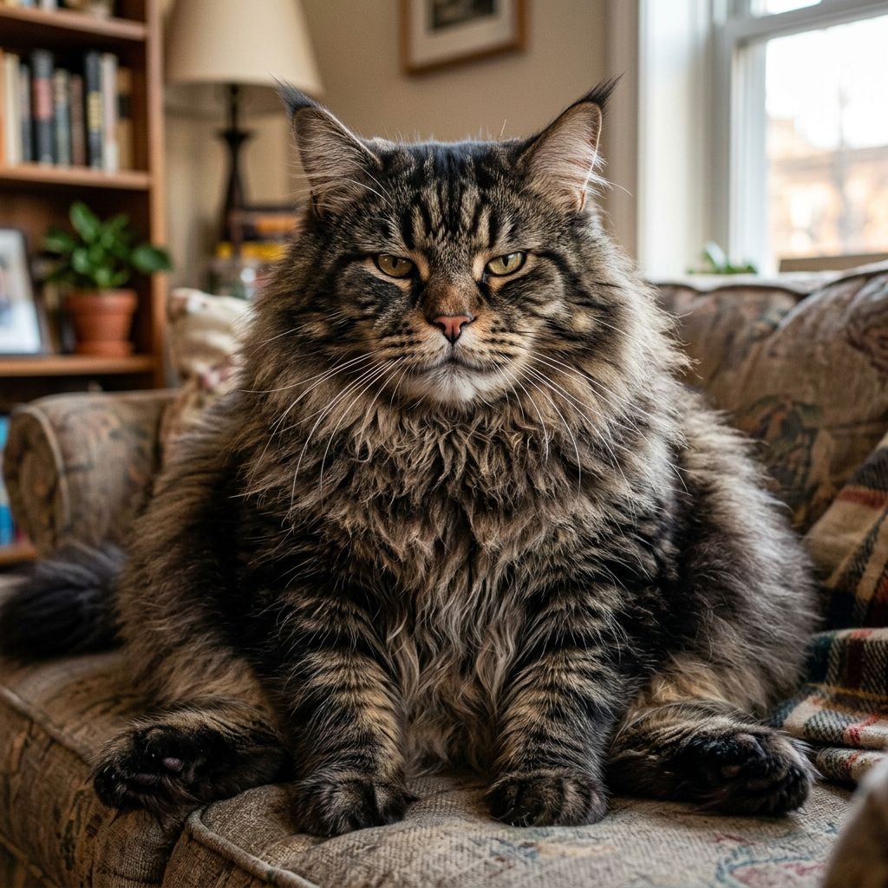

Дисклеймер
Всё, что написано ниже, обязательно к прочтению. Кот проследит.
О содержании сайта
Сайт «Против VS напротив», он же «VS», он же «SV», является художественным высказыванием на тему котов. Ни одна страница не претендует на научность, кроме страницы «Факты», которая претендует, но ей никто не верит.
О котах

Изображения котов на этом сайте вымышленные. Реальный кот один, и он не давал согласия ни на что.
Позиция кота: без комментариев

Любое совпадение с вашим котом является совпадением. Ваш кот, скорее всего, тоже в коробке.
Позиция кота: коробка моя
О персональных данных
Сайт не собирает, не хранит и не передаёт персональные данные. Не потому, что мы такие сознательные, а потому что это статичные страницы в папке. Аналитики нет, куки нет, форм нет. Кот против форм.
Об авторских правах
Название сайта существует в трёх вариантах написания: «Против VS напротив», «VS» и «SV». Какой из них официальный, неизвестно. Мы склоняемся к тому, что все три. Спорить об этом с нами бессмысленно: спор всегда выигрывает кот.
Ограничение ответственности
- За упущенное время, потраченное на просмотр мемов, администрация ответственности не несёт.
- За кота, который лёг на клавиатуру во время чтения, ответственность несёт кот.
- За качество новостей из раздела «Новости» отвечает редакция. Редакция в отпуске.
- За всё остальное отвечает кот. Кот отказался от ответственности.
Как связаться
Никак. Кот не ведёт переписку. Кот ведёт наблюдение.
Прочитав этот дисклеймер, вы согласились с ним. Вы ничего не подписывали, но кот всё видел.